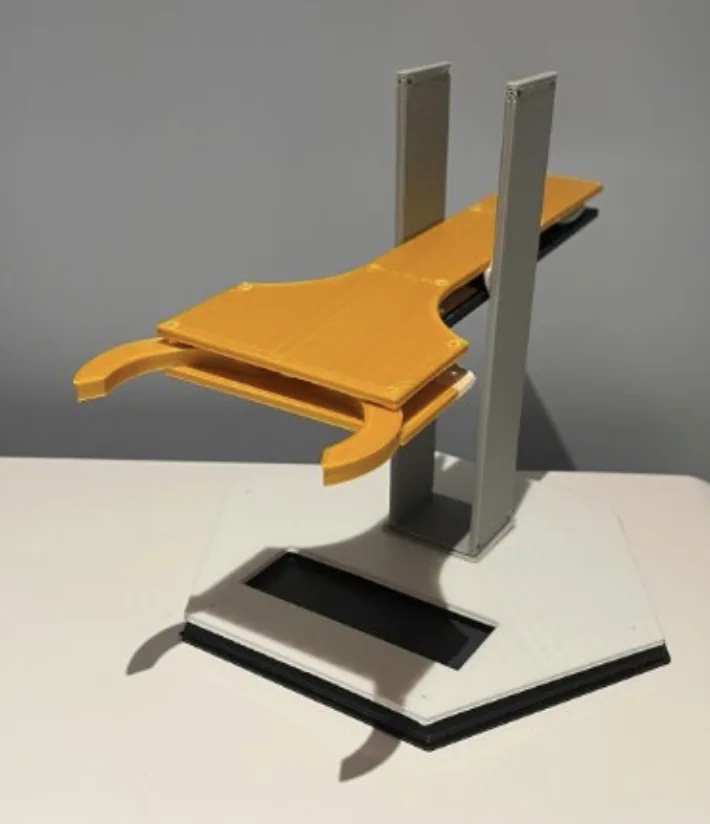
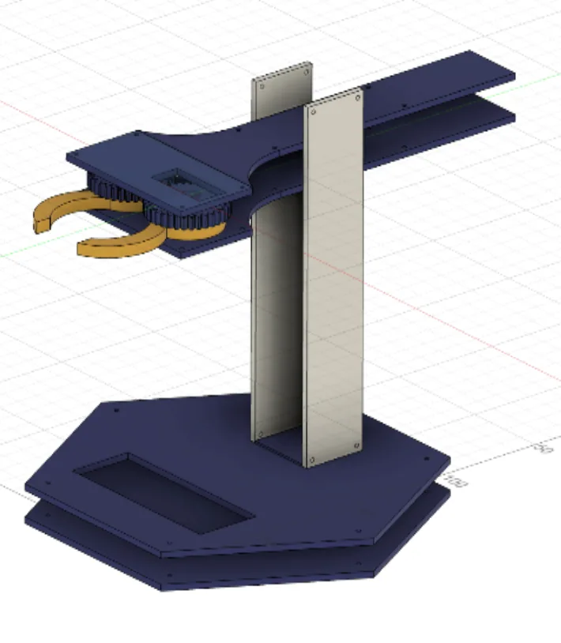
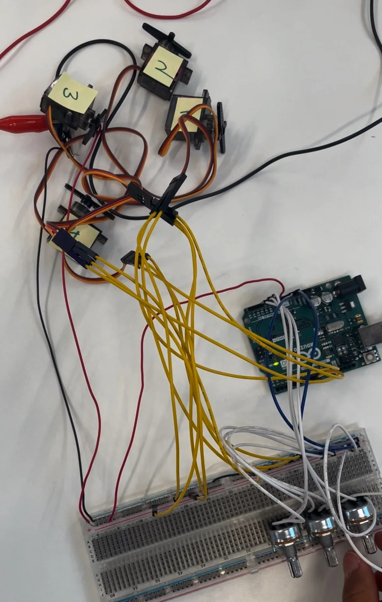
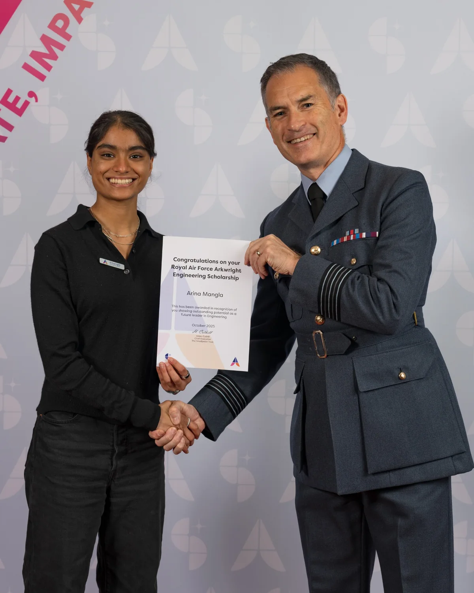

Servo-Controlled
Robotic Arm.
An exploration in practical mechatronics: developing a robotic arm with servo-actuated joints, an Arduino-based control system and a revised structure designed to use 50% less plastic.

Physical prototype
CAD assemblyMaking robotics more accessible.
I set out to explore how an affordable, durable, easy-to-use robotic arm could be constructed with mechanical parts and programmable movement. The early concept focused on a gripping mechanism and controllable arm joints.
My approach combined a hand-drawn design process with CAD, servo-motor control, circuit simulation and physical prototyping.
Connecting human input to mechanical movement.
The control system used an Arduino Uno, servo motors, potentiometers and, in a later code iteration, buttons for preset motion sequences. I developed the wiring diagrams and code in stages before testing the electronics on a breadboard.

From circuit layout to breadboard.
Early code mapped potentiometer readings to servo positions. Later iterations explored button-triggered movements and changes to the power setup.
- Arduino programming used to translate analogue input into motor commands.
- Wiring and actuation tested on a breadboard before integration.
- A separate power supply was introduced during testing to improve servo movement.
Refining the structure, not just the controls.
Revised sketches and CAD layouts document changes to the arm’s geometry, support, base and gear-driven gripper. Material efficiency became a design constraint: reducing the amount of printed plastic while retaining the structure required for the prototype.
Less material. Same engineering ambition.
By revisiting the structure and the way parts were supported and fastened, I reduced plastic use by 50% in my design, demonstrating how sustainability considerations can guide mechanical decisions.
Documenting the build.
A short test clip shows the servo-and-potentiometer control setup. My handwritten engineering notebook also records sketches, alternative designs, coding revisions and circuit layouts.
Control-system testing
An 8-second record of the breadboard setup, servos and input controls. This is an electronics test, rather than a demonstration of the fully assembled arm.
Open full engineering notebook 11 pages
Explore the original planning, mechanical sketches, circuit diagrams, programming iterations and CAD assembly notes. Select any page to expand it.
Engineering beyond the workshop.
My Arkwright sponsorship is from the Royal Air Force (RAF). Through the sponsorship, I have the opportunity to learn about the work of professional engineers and gain a wider perspective on where an interest in engineering can lead.

Learning from engineers in the RAF.
My Arkwright sponsorship connects me with the Royal Air Force and an engineering mentor. Hearing about his role has helped me explore how engineering is applied beyond the classroom, including within the armed forces.
RAF Arkwright Engineering Scholarship presentation · October 2025
Showing girls where engineering can take them.
I am currently organising an outreach talk at which my RAF engineering mentor will speak about his work. The talk aims to introduce girls to different STEM career pathways, with a particular focus on engineering roles in the Royal Air Force and the wider armed forces.
The goal is to make these less-visible career options more accessible and encourage more girls to consider futures in engineering.